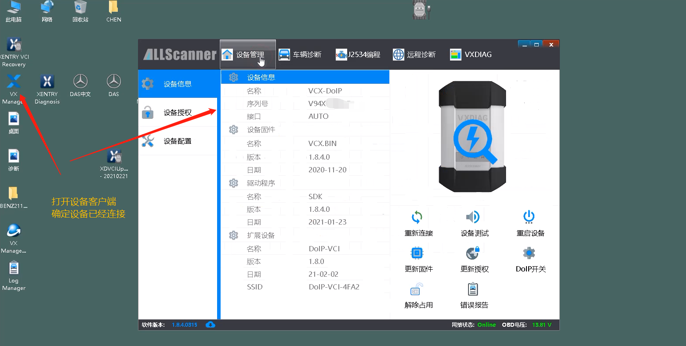
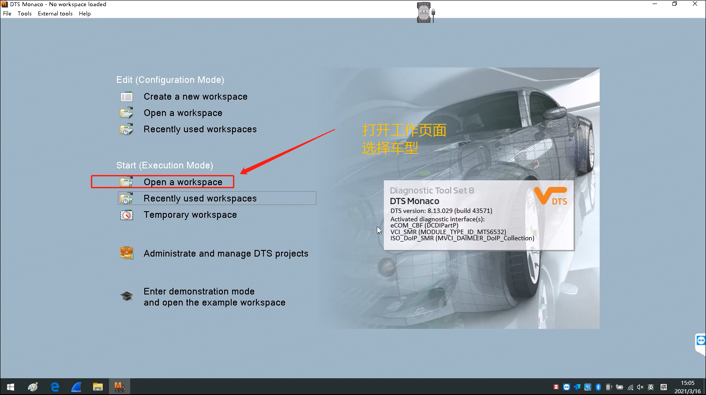
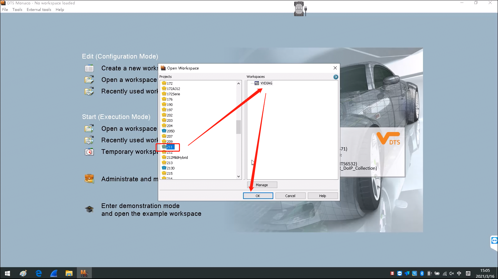
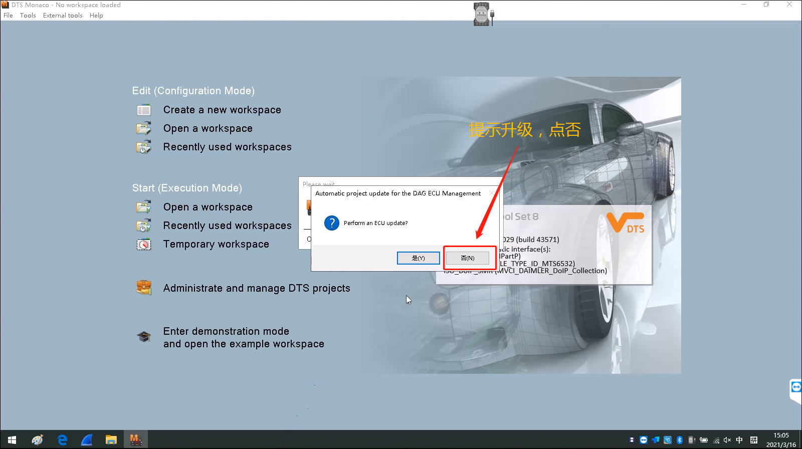
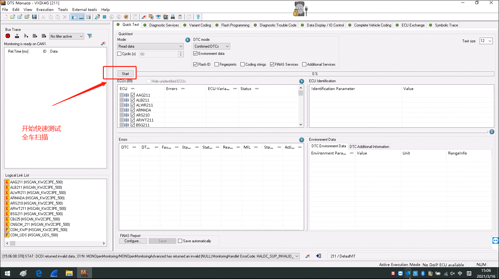
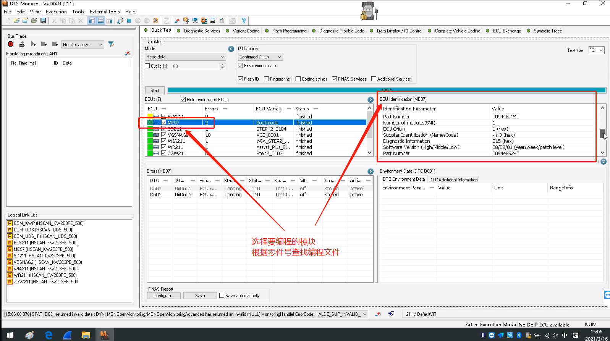
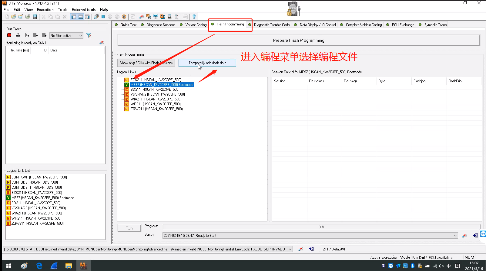
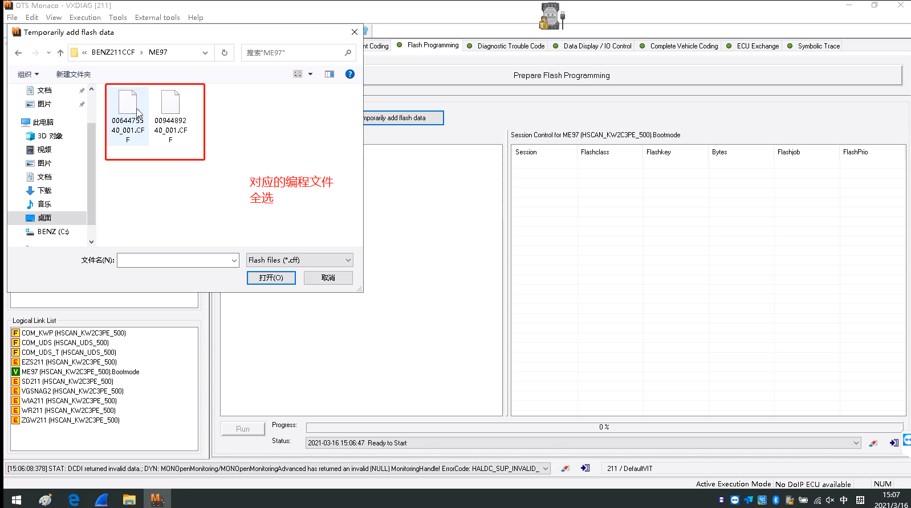
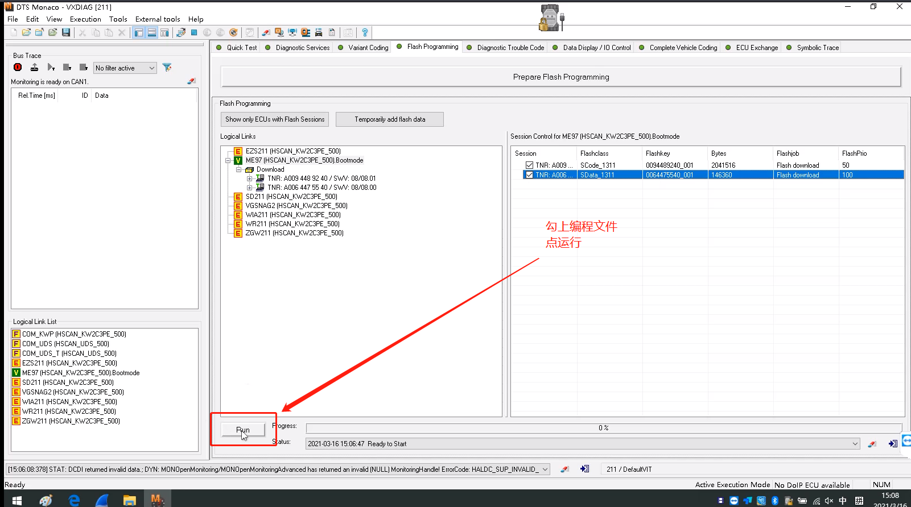
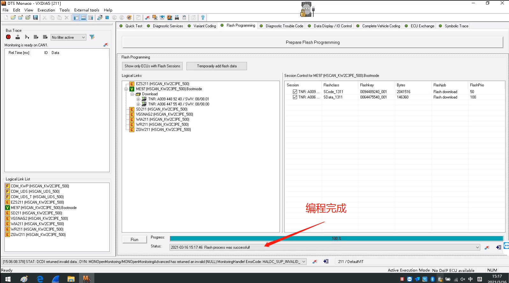

BENZ ME97EngineDTSProgramming(CBF,CFF)
Note：This article briefly introducesVCXhow to operate the deviceDTSto performMercedes-BenzModelsCBFquicklyTestandCFF ECUProgramming（Mercedes-Benz211EngineME97）
1.DeviceconnectabovecomputerandVehicle（ormodulePlatform），OpenVCXClientVCI ManagercheckDeviceInformation（FirmwareandDriverisif latestNew，Licenseisif normal）

2.ClickDTSSoftware，OpenoneOperationgroup；


3.SelectModelsandDeviceConnection,promptupgradeclassoneselect allNO；


4.EnterModelsMenuclick start StartFullvehicle scan，scan completeafterSelectneedProgrammingControl Unit EngineME97，clickopenafterinrightpanelwithincheckECUpartsnumber，based onpartsnumberreadyProgrammingFile.CFF（ProgrammingFilesomeinCdiskDTSProjectsFilein folder，if not available, get frominDiagnostic Softwareorofficial serverDownload）；


5.EnterProgrammingMenu，SelectEngineME97,SelectreadyforshouldCFFProgrammingFile（Fullselectoneflash all）；


6.checkaboveallFile，StartFlash；


7.Flashprocesscenter，oneFileDonewillAutomaticStartanotheroneFlash，all flashedafterprogress barbelowbelowwillavailableprompt，FlashDone。
